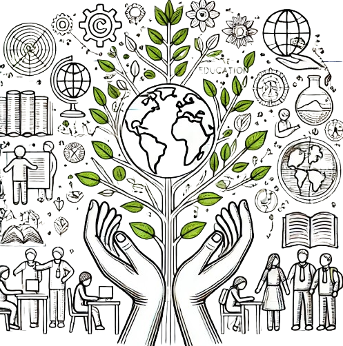
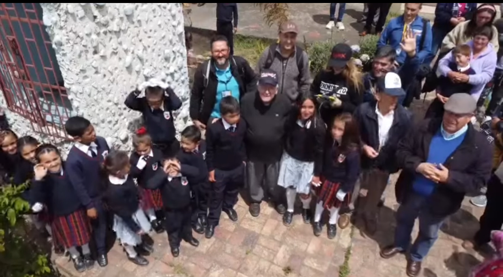

Introducción
↑ Regresar al menúLa ecopedagogía es un movimiento que busca reorientar la educación hacia un desarrollo sostenible y una ciudadanía planetaria. Durante la última década, América Latina y el Caribe han vivido intensos procesos de democratización, paralelamente a economías de libre mercado y un adelgazamiento del rol del Estado (Gutiérrez et al., 1996).
Fig. 1: Ilustración conceptual de la ecopedagogía como cuidado de la Tierra a través de la educación y conciencia colectiva.
La crisis actual que vive la región no es tan sólo una crisis institucional o individual. No es solo la mala distribución y consumo de bienes, sino una crisis de valores y de destino. El tema ambiental se ha convertido en causa social ciudadana que convoca a muchos grupos voluntarios a nivel local, nacional, regional y global.
"Educarse es impregnar de sentido las prácticas de la vida cotidiana." (Gutiérrez, F., 1996)
Sin embargo, después de dos décadas de activismo ambiental, ha quedado al descubierto que la práctica ha tenido que ver poco, o muy poco, con la teoría sostenida. En la contradicción entre los valores proclamados y el comportamiento cotidiano se escinden la vida de los individuos y de las instituciones. Como señala Morin et al. (2003), "la inteligencia parcelada, compartimentada, mecanicista, desunida, reduccionista de la gestión política unidimensional destruye el complejo mundo en fragmentos desunidos" (p. 95).
Campos Mórficos y Aprendizaje Colectivo
↑ Regresar al menúLos campos mórficos representan un concepto desarrollado por Rupert Sheldrake que sugiere la existencia de campos de información que conforman y organizan sistemas complejos, incluyendo sociedades humanas y sus patrones de comportamiento colectivo (Sheldrake, 2009). Este enfoque resulta particularmente valioso cuando se integra con tecnologías de visualización espacial y análisis territorial.
El aprendizaje colectivo se fundamenta en la idea de que el conocimiento no es solo individual sino también una construcción social. En el contexto de la ecopedagogía, esto significa que las comunidades pueden aprender juntas a desarrollar prácticas sostenibles a través de sistemas como las alertas tempranas de fenómenos naturales y el monitoreo participativo (Wenger, 2010).
La concepción lineal del mundo, derivada de la ciencia newtoniana, está dando paso a nuevas formas de comprensión, interpretación y expresión del universo como consecuencia de la teoría de la relatividad y de la dimensión cuántica de la realidad. Esta transformación paradigmática está reflejada también en las nuevas formas de procesar datos ambientales mediante inteligencia artificial (Capra & Luisi, 2014).
"Los descubrimientos del nuevo paradigma científico han ocasionado un profundo cambio en nuestra visión del mundo, determinando el paso de una concepción mecanicista cartesiana y newtoniana a una visión holística y ecológica." (Capra, 1996, p. 27)
Integración de Conocimiento Local y Tecnologías Avanzadas
La teoría de los campos mórficos propone que existe una memoria colectiva en la naturaleza que trasciende los límites físicos y temporales. Cuando la aplicamos junto con herramientas de machine learning y deep learning para analizar patrones ambientales, obtenemos poderosos instrumentos para anticipar cambios ecosistémicos y facilitar la adaptación comunitaria. El conocimiento ancestral de las comunidades actúa como una forma de campo mórfico que puede complementar y enriquecer el análisis computacional de datos satelitales (Kimmerer, 2013).
Educación Tecnológica Ambiental
↑ Regresar al menúLa educación tecnológica ambiental integra el conocimiento de las nuevas tecnologías con la conciencia ecológica. Este enfoque busca utilizar herramientas tecnológicas como geoportales, sistemas de información geográfica y tecnologías de percepción remota para entender mejor los ecosistemas, medir el impacto ambiental y desarrollar soluciones sostenibles (Gorelick et al., 2017).
Más que una lógica racional jerárquica y dominante, requerimos una lógica relacional, flexible, intuitiva y procesual. Categorías como las de espacio y tiempo, e inclusive la de materia, están dando paso a la dimensión holística que obliga a considerar el mundo desde el punto de vista de las relaciones e integraciones y no desde entidades aisladas (Boff, 2002).
El equilibrio ecológico exige cambios profundos del papel que debe jugar el ser humano en el ecosistema planetario. Esta visión economicista estrecha y reduccionista de nuestro Planeta Tierra, desconoce la otra dimensión más amplia y abarcadora del desarrollo sostenible.
Geoportales y Sistemas Computacionales para la Comprensión Territorial
Los geoportales como Google Earth Engine, representan una revolución en la forma en que las comunidades pueden entender sus territorios. Estas plataformas permiten democratizar el acceso a datos espaciales y facilitan el análisis ambiental mediante herramientas accesibles (Kumar & Mutanga, 2018). La integración de técnicas de machine learning y deep learning con datos satelitales y de drones está transformando la manera en que se realiza la gestión ambiental y la toma de decisiones territoriales.
Fig. 2: Ilustración de educación ambiental de los territorios.
Casos de Estudio Geoespaciales
↑ Regresar al menúCaso de Estudio: Humedal Santa María del Lago
En el Humedal Santa María del Lago (Bogotá, Colombia), se implementó un proyecto de educación ambiental comunitaria utilizando Google Earth Engine para monitorear cambios en la cobertura vegetal y calidad del agua. Los participantes aprendieron a interpretar imágenes satelitales históricas para comprender las transformaciones del ecosistema en las últimas décadas.

Fig. 3: Grupo de estudiantes durante la visita al Humedal Santa María del Lago en Bogotá, donde participaron en actividades de monitoreo ambiental utilizando herramientas geoespaciales.
El proyecto integró técnicas de clasificación supervisada de imágenes Landsat y Sentinel-2 para detectar cambios en los patrones de vegetación acuática y terrestre entre 1985 y 2022. Los resultados mostraron una reducción del 38% en el espejo de agua y un incremento significativo en especies invasoras. La comunidad local utilizó estos datos para desarrollar un plan de acción de restauración ecológica y establecer un sistema de alerta temprana para monitorear futuros cambios (García-Martínez et al., 2023).
"La democratización de las herramientas geoespaciales representa un cambio paradigmático en la gestión ambiental comunitaria, permitiendo que el conocimiento técnico complejo sea accesible para las comunidades locales." (García-Martínez et al., 2023, p. 142)
Transferencia de Conocimiento en Costa de Marfil
En Costa de Marfil, un proyecto innovador dirigido por el experto en agroecología John Monje implementó la transferencia de conocimientos sobre el uso de datos satelitales y captura con drones para la toma de decisiones agrícolas. Utilizando algoritmos de machine learning, específicamente redes neuronales convolucionales para la clasificación de imágenes, las comunidades locales fueron capacitadas para identificar patrones de deforestación, evaluar la salud de los cultivos y optimizar el uso del agua.
Fig. 4: Capacitación sobre uso de drones y sistemas de información geográfica con comunidades locales de Costa de Marfil.
Fig. 5: Explicación de patrones de cultivo y gestión del agua utilizando mapeo participativo para agricultores locales.
El proyecto trabajó con 25 comunidades agrícolas, capacitando a 120 agricultores y técnicos locales en el uso de drones de bajo costo equipados con cámaras multiespectrales. Los datos recopilados se procesaron utilizando algoritmos de deep learning para generar índices de vegetación (NDVI) y detectar estrés hídrico. Los resultados mostraron un aumento del 27% en la producción de cacao con una reducción del 18% en el uso de agua de riego (Monje et al., 2024).
Esta experiencia demuestra cómo las tecnologías avanzadas pueden ser apropiadas por comunidades rurales para mejorar sus prácticas agrícolas sostenibles y adaptarse al cambio climático. El aspecto más innovador fue la integración de conocimientos tradicionales con tecnologías avanzadas, creando un sistema de conocimiento híbrido que respeta y valoriza el saber local mientras aprovecha las ventajas de la ciencia de datos moderna.
Alertas Tempranas y Prevención de Desastres
Los sistemas de alerta temprana basados en geoportales y técnicas de machine learning están revolucionando la forma en que las comunidades responden a amenazas naturales. En particular, las técnicas de aprendizaje profundo aplicadas a imágenes satelitales permiten detectar patrones sutiles que pueden indicar riesgos inminentes como deslizamientos, inundaciones o incendios forestales.
Transferencia de Conocimientos a Colegios Rurales
Como parte de las iniciativas de ciudadanía ambiental, se ha implementado un programa de transferencia de conocimientos sobre el uso de drones y datos geoespaciales a estudiantes de colegios rurales. Estas actividades buscan democratizar el acceso a tecnologías avanzadas y empoderar a las nuevas generaciones en el cuidado y gestión de sus territorios.

Fig. 6: Comunidad de producción de arróz en Costa de Marfil participando en actividades de aprendizaje sobre tecnologías geoespaciales y monitoreo ambiental con drones.
La implementación de estos sistemas en regiones vulnerables de América Latina ha permitido que comunidades históricamente marginadas puedan anticiparse a eventos climáticos extremos, reduciendo significativamente las pérdidas humanas y materiales. El acceso a estas tecnologías representa un paso importante hacia la justicia ambiental y climática (Rodríguez-Alarcón et al., 2022).
Despertar Emocional y Aprendizaje
↑ Regresar al menúEl despertar emocional es fundamental para un auténtico aprendizaje ecológico. No podemos transformar nuestras relaciones con el entorno sin transformar primero nuestra sensibilidad y conciencia hacia él.
En la construcción de nuestras vidas no podemos seguir excluyendo como hasta ahora, toda retroalimentación al sentir, a la emoción, y a la intuición como fundamento de la relación entre los seres humanos y la naturaleza.
El desarrollo de relaciones significativas tiene que ver con la capacidad de todo ser humano de movilizar su sensibilidad, imaginación creadora, su intuición, sus energías afectivas, su amor...
Fig. 7: Estudiantes de un colegio rural participando en actividades de aprendizaje sobre tecnologías geoespaciales y monitoreo ambiental con drones.
"La ecología del yo es uno de los imperativos más importantes para hacerle frente a la crisis actual. Los nuevos agentes de la ciudadanía ambiental deben desarrollar su capacidad de sentir y expresar la vida tal como debe ser sentida y vivida."
Ciudadanía Planetaria
↑ Regresar al menúLa planetariedad debe llevarnos a sentir y vivir nuestra cotidianidad en relación armónica con los otros seres del Planeta Tierra. El destino de la humanidad depende en gran medida de la capacidad que tengamos de asumir la planetariedad como condición de los nuevos procesos sociales.
Educar en la era planetaria es el principal objetivo de la educación contemporánea. El término "planetarización" es más complejo que "globalización" porque es un término radicalmente antropológico que expresa la inserción simbiótica, pero al mismo tiempo extraña, de la humanidad en el planeta Tierra.
Ya en la década de los 60 Marshal McLuhan, el profeta de los medios de comunicación, habló de la aldea planetaria y consecuentemente del ciudadano planetario. Según él, la revolución electrónica crea un espacio-acústico capaz de globalizar los acontecimientos cotidianos.
"La misión de la educación para la era planetaria es fortalecer las condiciones de posibilidad de la emergencia de una sociedad-mundo compuesta por ciudadanos protagonistas, consciente y críticamente comprometidos en la construcción de una civilización planetaria."
Nuevas Prácticas
↑ Regresar al menúLas nuevas prácticas en ecopedagogía deben atravesar el umbral entre la proclama y la acción. La práctica social sigue reñida con la teoría proclamada. Un orden estratificado, preestablecido, lineal, secuencial y esencialmente jerárquico debe dar paso a otro orden intrínsecamente flexible, progresivo, complejo, coordinado, interdependiente, solidario autorregulado.
La conferencia de las Naciones Unidas sobre Medio Ambiente y Desarrollo, celebrada en Río de Janeiro, Brasil, en junio de 1992, constituye un acontecimiento histórico muy importante en lo que respecta al medio ambiente y al desarrollo sostenible.
Sin embargo, el discurso, las proclamas y la declaración de Río son apenas un primer paso en ese largo caminar del proceso de la demanda. La historia nos demuestra que el discurso de la proclama dista mucho, y a veces hasta contradice, el discurso del proceso de la demanda.
"De la proclama de ECO 92 a las demandas inherentes al desarrollo sostenible de los pueblos, media un abismo que solo podrá ser salvado por procesos pedagógicos."